Production https://app.dynamicsroute.tech · staging
https://dev.dynamicsroute.tech
Related documents
Software Requirements Specification (SRS); API Technical Specifications
(TDD/LLD) package; Request/Response package with endpoint inventory and live
captures
Submitting entity
[ LEGAL NAME OF COMPANY / LICENCEE ]
Contact person
[ NAME, TITLE, EMAIL, TELEPHONE ]
Date of submission
[ DD MONTH YYYY ]
Status of this document
This design describes the system as implemented in the deployed service.
Diagrams are generated from the mermaid sources in sources/assets/ and
rendered into this PDF together with the HTML. Fields shown in
amber are administrative placeholders that the submitting
entity completes before submission.
Contents
1
Introduction
2
Architecture overview
3
Data flow design
4
Component design
5
Data architecture
6
API design
7
Real-time architecture
8
Security architecture
9
Error handling and observability
10
Deployment and environments
11
Testing strategy
12
Design — requirements traceability
A
Appendix A — document reproduction pipeline
Figures
2.1
Layered request path — pipeline, services and stores
Journey status machine — execution path, decisions, terminal states
How to read this document
§2–§4 describe the static and dynamic design of one Node.js service: how a request
flows through the layers, how components are packaged, and how the central journey
state machine behaves. §5–§8 specify the data, API, real-time and security designs.
§9–§11 cover operations: errors, logging, deployment and testing. §12 traces each
design section back to the SRS requirement groups. All quantitative claims
(routes, tables, statuses, message kinds) were extracted from the source and
validated against a running instance.
1. Introduction
1.1 Purpose
This document specifies the system and architecture design of the Transport
Management System Backend API v1.0.0 — the technical counterpart of the companion
SRS. It is written so that an external reviewer can understand the architecture, the
trust boundaries, the data flows and the design decisions without reading the source
code, and so that a development team can maintain the system against a stable
reference.
1.2 Scope
The system is a single deployable unit that serves the REST API, the Socket.IO
gateway and static assets from one Node.js process, backed by MySQL and Redis, with
outbound integrations to SMS, e-mail, push and payment services. Out of scope: the
client applications and the internal workings of the third-party providers.
SRS-1.0.0 (requirements), the TDD/LLD package (conventions, data model, status
machine, socket protocol, full endpoint inventory) and the Request/Response
package (six live captures) form the rest of the submission.
2. Architecture overview
2.1 Style
The system is a layered, service-oriented monolith: one Node.js
process serves REST, WebSocket and static traffic. Strict layering — routes →
middleware → controllers → services → CRUD/SQL — keeps business rules out of the
HTTP surface, while cross-cutting utilities (validator, responder, error handler,
logger, transaction context) are shared. Statelessness (JWT) plus the Socket.IO
Redis adapter allow horizontal scale-out without code changes.

Figure 2.1 — Layered request path: Nginx, Express pipeline, services, stores and
the real-time gateway
User/role ops, DB stats and maintenance, delinquency lifecycle, health.
3. Data flow design
3.1 Level 0 — context diagram
The system's external neighbours and the numbered flows between them. Every flow is
an HTTPS/JSON or WSS contract except the GPS traces the driver app also keeps
client-side; all inbound flows except the payment webhook and the public
auth endpoints require a valid bearer token.
Figure 3.1 — Level 0: clients, platform, infrastructure and external services with
numbered data flows
3.2 Sensitive-data entry points
Entry point
Channel
Lands in
Controls
Registration (name, phone, e-mail, password)
HTTPS JSON, public endpoint
Users, usersCredential (bcrypt hash)
Rate-limited auth routes, Joi validation, no password logging
OTP verification
SMS/e-mail out; HTTPS JSON in
Credential record (hashed OTP fields)
Single-use OTP, 24 h JWT issued only on success
Documents / images
multipart/form-data
AttachedDocuments + file store /uploads
Type & duplicate checks, image re-encode, access-controlled serving
GPS positions
WSS socket events + REST
JourneyRoutePoints, last-location store
Handshake JWT, room/ownership scoping, history retention
Role guards, transactional services, append-only audit
4. Component design
4.1 Layer contracts
Route — path constant (from Routes/EndPoints/*.js)
+ middleware chain (token → validator → guard) + controller. No business logic.
Controller — reads body/params/query and the authenticated
user, invokes exactly one service, returns via ServerResponder.
Service — owns rules and state transitions; throws
AppError on violations; wraps multi-statement work in the transaction
executor; writes history records; triggers notifications.
CRUD — parameterized SQL helpers only; no business decisions.
Single success renderer; derives the HTTP status from message/status fields when the caller does not pass one explicitly.
AppError + globalErrorHandler
Operational errors with HTTP codes; development sends the full error and stack, production masks 5xx and logs everything with request ids.
Validator(schema, source)
Joi middleware for body/query/params; reports all violations at once, strips unknown keys, guards empty POST bodies.
ListOfSeedData
Authoritative code-side seed: 20 journey statuses and their class sets (active/terminal/supporting/inactive), 12 roles, cancellation reasons, message catalog.
History service
insertHistoryRecord invoked before mutations; paired *History tables receive who/when/change-type rows.
Reconciler
reconcileStatus derives the correct status from decision evidence; whitelist = active statuses only.
Transaction context
Async-local transaction storage so nested service/CRUD calls join the ambient transaction instead of the pool.
4. Component design (continued)
4.4 The journey state machine
The behavioural core of the system. Statuses live in the JourneyStatus
table (20 seeded rows); the id→name map and the class sets are defined once in
Utils/ListOfSeedData.js and consumed by services, read paths and the
reconciler. See the SRS §7 for the requirement-level rules; the design view is below.
Figure 4.1 — Journey status machine: execution path (1→9), decision outcomes
(11, 16–19) and terminal states (10, 12–15, 20)
4.5 Transition choreography (sequence)
Every transition follows the same five-step choreography; only the endpoint and the
guard differ. Taking “driver starts journey” (8) as the example:
Edge — client calls
POST …/journeyStarted with the bearer token; VerifyToken resolves the
user, the Joi validator checks the payload.
Guard — the service loads the request row and its latest
decision, verifies the caller's role/ownership and that the current status is in
the allowed predecessor set (loaded = 7).
Transaction — inside one DB transaction: update
ShipperRequest.journeyStatusId, create the Journey
record (or update its start timestamp + GPS), append a JourneyDecisions
row, append history.
Commit — the transaction commits; a non-throwing path returns
the enriched request through ServerResponder (2xx envelope).
Fan-out — post-commit: shipper gets the typed
messages notification, driver's app receives the ack, any reconciler
cache for the row is invalidated.
Design invariant
Clients never write journeyStatusId. Every status change is produced
by a service action with a guard, inside a transaction, with a decision row and a
history row — which is what makes reconciliation (FR-04.6) and the audit trail
possible.
4.6 Read-path enrichment
The detail read service assembles each row with its decisions, linked driver, batch
and assignment context. Active company-target rows without an exact-status decision
keep their own status and attach the available decisions instead of projecting to
waiting — the projection bug this rule prevents is exactly the “row
shows no connected driver” class of defect. The list read applies connected-first
ordering with an EXISTS(JourneyDecisions + DriverRequest) subquery so
connected rows sort first without row multiplication.
5. Data architecture
103 tables in domain groups: identity, transport core,
companies/fleet, queue, bidding, finance, documents, delinquency, ratings,
subscriptions, reference data — detailed in the TDD package
(data-model.md).
Core chain:ShipperRequest → DriverBid / DriverRequest → JourneyDecisions → Journey →
JourneyRoutePoints / DeliveryConfirmations, with status by
journeyStatusId → JourneyStatus.
Keys: UUID business keys (*UniqueId, indexed) in
routes and payloads; numeric surrogate ids for status maps and joins.
Audit: paired *History tables written through
insertHistoryRecord; soft delete via *DeletedAt;
append-only history.
Transactions:DatabaseTransaction +
async-local context; the executor selection honours the ambient transaction,
else the pool — so service composition stays transaction-safe.
Hot paths: paged reads on indexed sort keys; the
connected-first ordering is a correlated EXISTS (no JOIN fan-out);
Redis caches hot reads with TTL and is cache-through, not authoritative.
Reference data
Enumerations (journey statuses, roles, document types, payment statuses,
cancellation reasons) are seeded rows joined on read and mirrored in
ListOfSeedData.js so code and database stay aligned; tests assert
the mirror.
6. API design
Surface: 204 routes / 285 operations in 27 groups; path
constants centralised in Routes/EndPoints/*.js; the mount table lives
in Routes/index.js (plus nested finance/company/queue/auth routers).
The complete inventory with auth labels ships as endpoints.md.
Auth:Bearer <JWT>; 17 public operations
(auth/registration, health, payment webhook, maintenance);
jwtOrApiKey variant accepts x-api-key for E2E
bootstrapping on DB endpoints.
Validation: Joi per route; pagination:page/limit/sortBy/sortOrder; limits: global + auth
rate limiters; 1 MB body cap.
Versioning: asset version 1.0.0; unversioned paths tracked by
release tags and this document set.
Maintenance endpoints (observed)
A handful of admin database-maintenance routes are reachable without a token
(auth commented out in source) — e.g. POST /api/admin/createTable,
DELETE /api/admin/dropTables. This is documented as observed; in
production they must remain network-restricted at the edge. dropAllTables
and the dev OTP viewer do require token/API-key.
7. Real-time architecture
client A ── socket.io ──▶ node-1 ──┐
client B ── socket.io ──▶ node-2 ──┼── Redis pub/sub (Upstash, TLS)
client C ── socket.io ──▶ node-1 ──┘ │
room fan-out:
queueOrg:<id>[:date]
per-socket direct emits
Handshake: the client sends its JWT in
socket.handshake.auth; init failures are answered with an error frame
and the socket is disconnected.
Inbound events:queue:subscribe /
queue:unsubscribe (room join/leave with ack),
locationUpdateToDriver / locationUpdateToShipper
(position relay + persistence), message keep-alive (acked with
response).
Outbound events:queue board updates to rooms;
typed notifications on the messages channel (78-kind catalog,
default channel overrideable per call); location events including a replay of the
last known position to newly connected sockets; structured error frames via
sendError.
State: connection store per user (for socket lookup and
fallback routing), last-location store; users without a live socket fall back to
FCM push / polling.
Robustness: per-event try/catch → error frame (never crashes
the loop); Redis adapter failures are logged and the process continues in
single-server mode.
Room
Used for
queueOrg:<orgUniqueId>
All queue events for the organization (all dates).
queueOrg:<orgUniqueId>:<date>
Day-scoped dispatch: drivers after check-in, admins managing that day's queue.
8. Security architecture
Control
Implementation
Transport
TLS everywhere (Nginx); WSS for sockets; HSTS at the edge.
App.js refuses to boot production with development-only configuration (default secrets/debug) rather than starting insecurely.
Error leakage
Production 5xx responses masked; full detail logged server-side with request ids.
Secrets
Environment variables only (56 vars), never committed; payment webhook signature verified before crediting.
9. Error handling and observability
Uniform errors: services throw AppError(message,
statusCode); the global handler renders the JSON envelope, logs 4xx as
warnings and 5xx as errors with correlation (request id, method, path, user).
Logging: structured Winston logs — request logger (timing,
status), validator failures with field details, socket errors with stacks,
application API errors. Client mistakes and server faults are logged in distinct
classes so E2E results correlate to backend logs.
Health:GET /api/health (liveness) and
GET /api/health/database (DB reachability) — public, polled by
monitoring; admin DB-stats endpoint for operators.
Performance: query-performance middleware captures slow
queries; request ids tie client reports to logs.
Nginx TLS terminator reverse-proxying to the app; WebSocket upgrade pass-through.
Environments
production app.dynamicsroute.tech · staging dev.dynamicsroute.tech · local (MAMP MySQL) — selected via NODE_ENV + env config; fail-closed checks in production.
Unit/integration (jest): 102 tests over services and utilities
(status logic, validators, helpers).
End-to-end: a 248-check suite covering registration → login →
OTP → request lifecycle → bidding → assignment → journey → cancellation, plus
negative probes (401/400/404) and a socket harness (room subscribe, board
broadcast, location relay, typed messages).
Route contract checks: the published endpoint inventory is
verified against a running instance by live preflight probes — only routes that
answer non-404 are listed, auth labels come from observed 401 behaviour.
Regression gate: per-run baselines with named failure
comparison (e.g. 239 passed / 3 known-failing / 6 skipped) so new breakage is
distinguished from accepted debt.